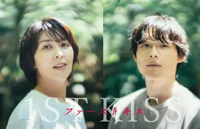
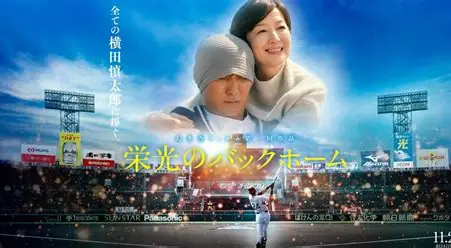
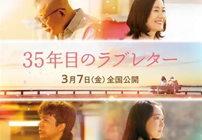
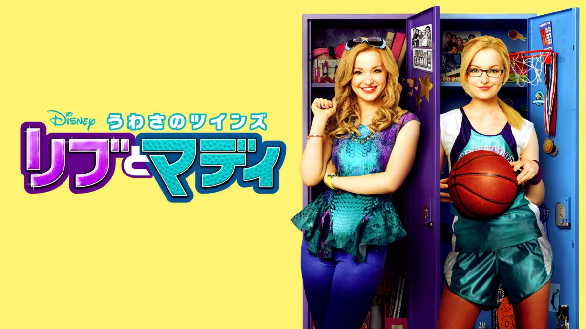
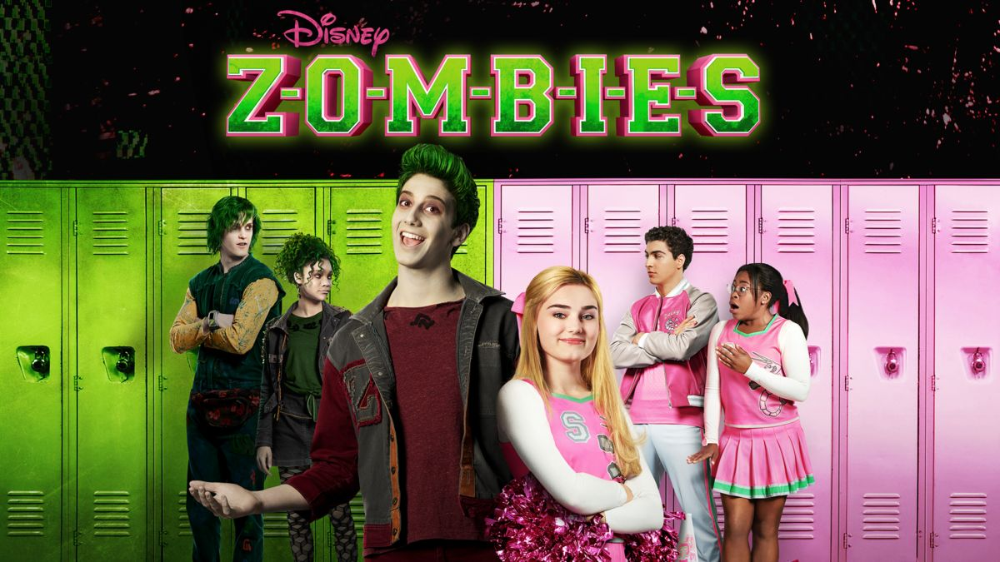

映画 TOP3
| 名前 | 主演 | あらすじ | |
|---|---|---|---|
| １ | ファーストキス 1ST KISS
 |
松たか子・松村北斗 | 事故で夫を亡くした女性が、過去に戻る不思議な出来事を通して、夫との関係や本当の思いを見つめ直していく物語。 |
| ２ | 栄光のバックホーム
 |
松谷鷹也・鈴木京香 | 元高校球児の青年が病気と闘いながら、仲間や家族に支えられて最後まで野球に向き合う感動の実話映画。 |
| ３ | 35年目のラブレター
 |
笑福亭鶴瓶 | 読み書きが苦手な夫が、長年支えてくれた妻へ感謝を伝えるため、手紙を書くことに挑戦する夫婦愛の物語。 |
ディズニーチャンネル作品 TOP3
| 名前 | 主演 | あらすじ | |
|---|---|---|---|
| １ | ディセンダント | ダヴキャメロン・キャメロンボイス・ブーブースチュワート・ソフィアカーソン | 悪役の子どもたちが、ヒーロー側の子どもたちが通う学校に招かれ、自分の生き方を選ぶ物語。悪に従うか、自分の意思で未来を変えるかという葛藤を通して、友情や成長が描かれる。 |
| ２ | うわさのツインズ リブとマディ
 |
ダヴキャメロン | 性格が正反対の双子、人気女優のリブとスポーツ万能のマディが、同じ学校で家族や友達と日常を過ごすコメディ。双子の絆や家族の温かさを中心に、笑いと成長が描かれる。 |
| ３ | ゾンビーズ
 |
メグドネリー・アンドリューフランシス | ゾンビと人間が共に暮らし始めた町で、ゾンビの少年ゼッドと人間の少女アディソンが、偏見を乗り越えて友情と理解を深めていく物語。ダンスや音楽を交えながら、多様性と共生がテーマになっている。 |